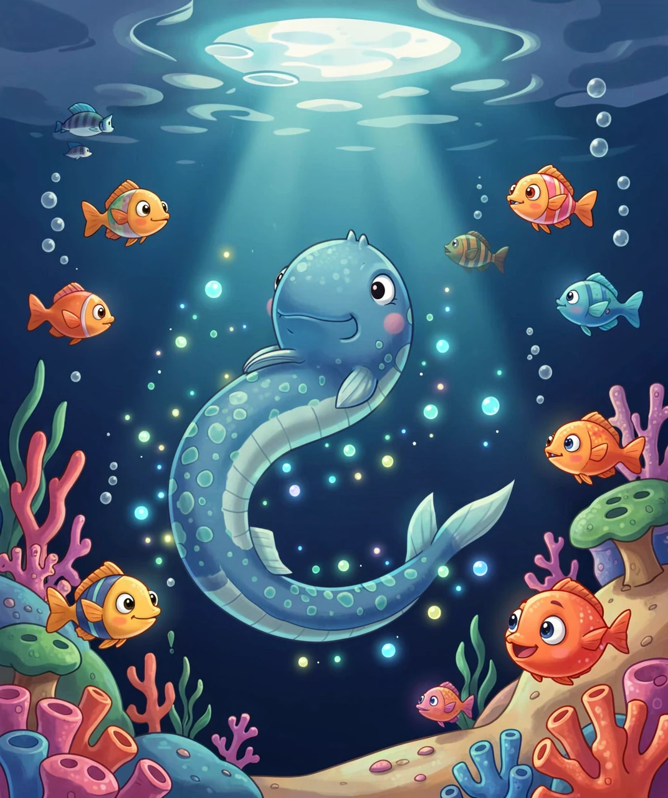
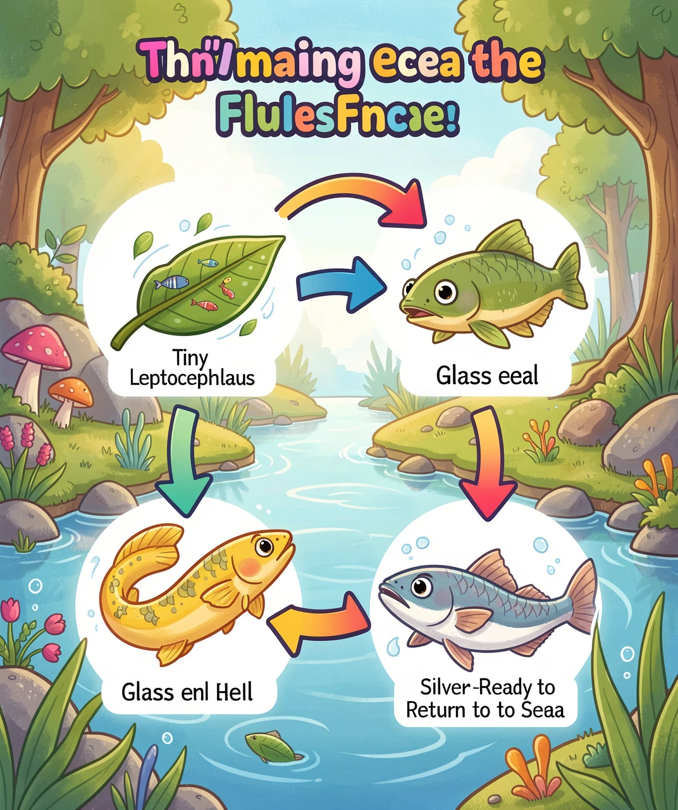
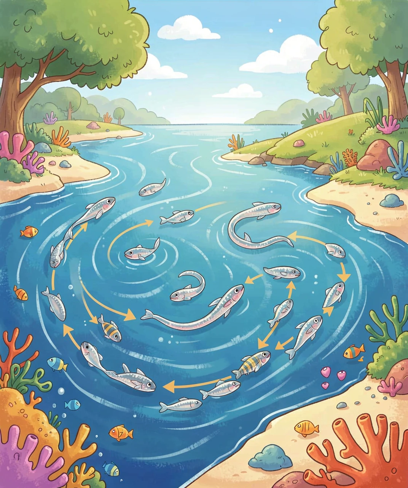
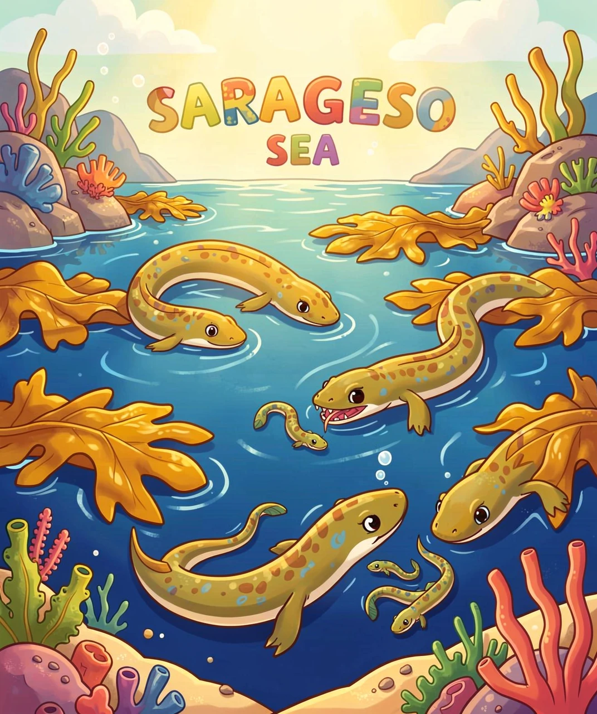
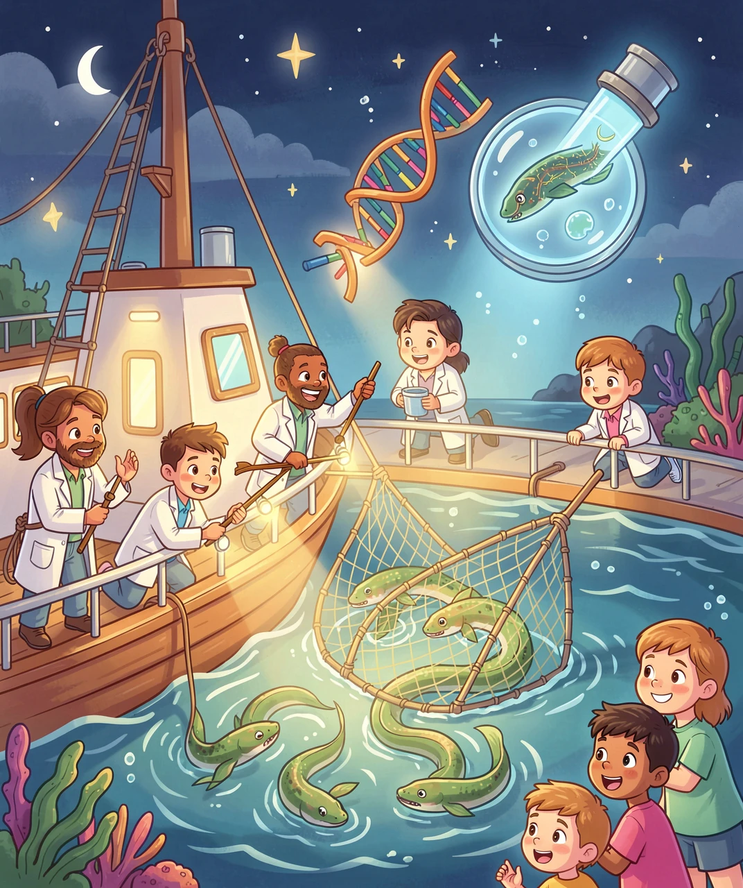

大海最深处藏了2000年的谜团，至今还没人完全解开！
你见过鳗鱼吗？它长得像蛇，滑溜溜的，在水里扭来扭去。鳗鱼是一种非常神奇的动物——它会变色，会变形，甚至会跨越整个大西洋去"约会"！但最让人惊讶的是：在人类几千年的历史中，从来没有人在野外亲眼看到过鳗鱼产卵！
古时候的人甚至以为鳗鱼是从泥巴里自己长出来的！古希腊的大哲学家亚里士多德就认为鳗鱼没有性别，是"自然发生"的。直到20世纪，科学家才终于发现了鳗鱼繁殖的秘密——而这个秘密，至今仍然有很多未解之谜。

鳗鱼最特别的地方，是它的一生会经历完全不同的形态变化——从透明的"柳叶"变成透明的"玻璃鳗"，再变成黄褐色的"黄鳗"，最后变成银色的"银鳗"。每次变化都像换了一个物种！这种神奇的变身能力，在整个鱼类世界中都极其罕见。
鳗鱼的一生就像一部奇幻冒险电影，每个阶段都大变样！让我们来看看欧洲鳗鱼（和日本鳗鱼也类似）的完整生命旅程：
第一阶段：柳叶鳗（Leptocephalus）
刚从卵里孵出来的小鳗鱼，身体像一片透明的柳树叶！它薄得几乎看不见，只有骨头和内脏有点颜色。这个阶段的小鳗鱼叫"柳叶鳗"，它们在大洋中随海流漂荡，像乘坐免费的"洋流公交车"一样，一路漂向欧洲或亚洲的海岸。这段旅程可能要花1到3年！

第二阶段：玻璃鳗（Glass Eel）
当柳叶鳗漂到海岸附近时，它会经历一次大变身——身体变短变粗，不再像叶子了，而是变成了细长的小鳗鱼。这时候它还是透明的，所以叫"玻璃鳗"。玻璃鳗开始游进河口，进入淡水河流。
第三阶段：黄鳗（Yellow Eel）
进入河流后，玻璃鳗渐渐长出颜色，变成黄褐色的"黄鳗"。黄鳗会在河流、湖泊、池塘里生活5到20年，有的甚至能活30年以上！它们白天躲在石头缝里，晚上出来觅食，吃小鱼、虾、虫子。
第四阶段：银鳗（Silver Eel）
当黄鳗觉得"时候到了"，它会再次变身——背部变成深色，腹部变成银白色，眼睛变大，消化系统甚至会萎缩（不再吃东西了！）——这就是"银鳗"。银鳗只有一个使命：回到大海深处去产卵。
鳗鱼最令人震撼的，是它们的大迁移旅程。欧洲鳗鱼从欧洲的河流出发，横跨整个大西洋，游到5000到6000公里外的马尾藻海去产卵！这段旅程大约需要6个月，而且它们一路上什么都不吃！
马尾藻海是什么地方？它位于北大西洋的中心，是一个没有陆地的"海中之海"——四周没有海岸线，边界由洋流圈定。这里漂浮着大片的马尾藻（一种褐色的海藻），海水温暖而平静。欧洲鳗鱼和美洲鳗鱼都不约而同地选择了这里作为产卵地。
而日本鳗鱼的故事同样壮观——它们从日本、中国、韩国的河流出发，游到2000到3000公里外的马里亚纳群岛附近海域产卵。这段旅程也要好几个月！

你可能会问：鳗鱼怎么知道要去哪里？它们从来没有去过那里，父母也不在身边教路——这是一场完全凭本能的旅行！科学家认为，鳗鱼可能是通过感受地球磁场的方向、水温的变化、海水的盐度、甚至洋流的细微差别来导航的，但具体机制至今仍是一个谜。
更神奇的是：柳叶鳗宝宝出生后，又是怎么找到回到欧洲或亚洲的路的？它们从未见过自己的"家乡"，却能精准地顺着洋流漂流到正确的地方！这种天生的导航能力，简直比GPS还厉害！
人类花了2000多年才找到鳗鱼的产卵地，这背后是一段精彩的科学探索史。
亚里士多德（公元前4世纪）：认为鳗鱼从泥土中自发产生，没有繁殖过程。
弗洛伊德（19世纪，就是那位著名的心理学家！）：年轻时的弗洛伊德花了几百个小时在显微镜下研究鳗鱼的生殖器官，试图找到鳗鱼的睾丸，但最终失败了。这段经历后来被认为影响了他后来的心理学理论——关于"看不见的力量"！
约翰内斯·施密特（1904-1922年）：这位丹麦科学家花了近20年在大西洋上航行，用网捕捞各种大小的鳗鱼幼体。他发现，越往大西洋中心走，柳叶鳗越小——最小的就在马尾藻海附近！1922年，他终于确认：马尾藻海就是欧洲鳗鱼的产卵地！

但是，至今没有人亲眼在马尾藻海看到过成年鳗鱼产卵！施密特找到的只是最小的幼体，推测产卵地在附近。2016年，日本科学家在马里亚纳群岛附近第一次直接采集到了日本鳗鱼的产卵受精卵，但亲眼观察产卵行为依然没有实现。鳗鱼似乎选择在深海几百米处产卵，那里人类很难到达。
鳗鱼为什么要跑这么远去产卵？科学家推测，马尾藻海是一个洋流的"汇聚点"——北赤道暖流和湾流从这里出发，柳叶鳗宝宝出生后正好可以搭上这两条"高速公路"，一路漂到欧洲和美洲的海岸！这个策略已经运行了数百万年，堪称大自然最精妙的"快递系统"！
鳗鱼的故事虽然神奇，但现状却令人担忧。过去50年里，欧洲鳗鱼的数量下降了超过90%！日本鳗鱼也在2014年被国际自然保护联盟列为濒危物种。鳗鱼正在以惊人的速度从我们的河流和海洋中消失。
鳗鱼为什么变得这么少？主要有三个原因：
1. 过度捕捞：玻璃鳗（幼鳗）在日本和西班牙是昂贵的美食。在日本，一碗鳗鱼饭可以卖到几千日元，而每公斤玻璃鳗的价格甚至比黄金还贵！巨大的利益驱使人们疯狂捕捞幼鳗。
2. 栖息地丧失：河流上的大坝和水闸挡住了鳗鱼回家的路。许多鳗鱼在前往河流的途中被困住，永远到不了适合生活的地方。湿地的填埋也减少了鳗鱼的栖息空间。
3. 气候变化：海水温度的变化可能影响洋流的方向和强度，让柳叶鳗宝宝搭不上正确的"洋流公交车"，迷失在茫茫大海中。

好消息是，人们已经开始行动了！很多国家建造了"鳗鱼通道"——在大坝旁边修一条专门给鳗鱼爬的小路，帮助它们翻越障碍。欧洲已经禁止出口欧洲鳗鱼。日本科学家正在研究人工繁殖鳗鱼，2010年首次在实验室中成功让鳗鱼产卵并孵化出幼体，但目前成本太高，还无法大规模推广。
鳗鱼从恐龙时代就已经在地球上生活了。它们见证了大陆漂移、冰河世纪、物种大灭绝——却在21世纪面临着最大的危机。保护鳗鱼，不仅是为了保住一种美味的食材，更是为了守护大自然最不可思议的生命奇迹之一。也许未来有一天，你也能成为那个最终揭开鳗鱼产卵之谜的人！
（答案：1-B, 2-C, 3-B, 4-C, 5-D）